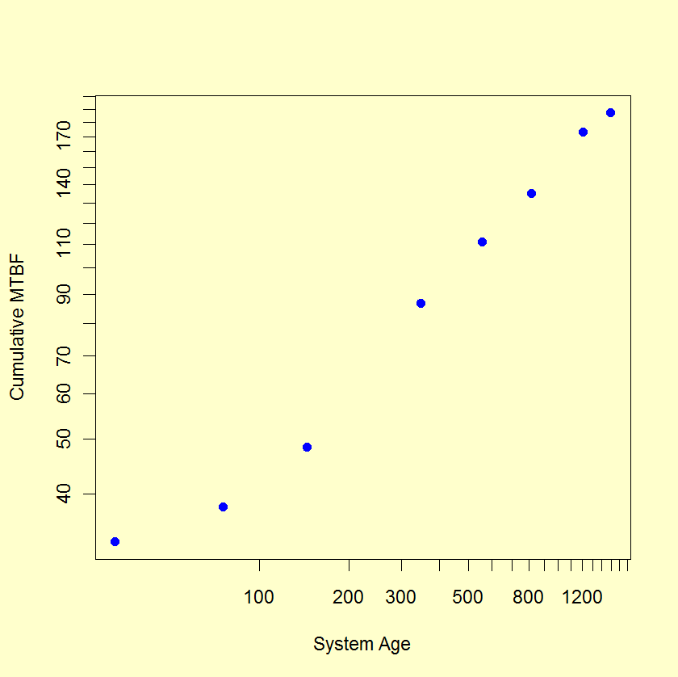
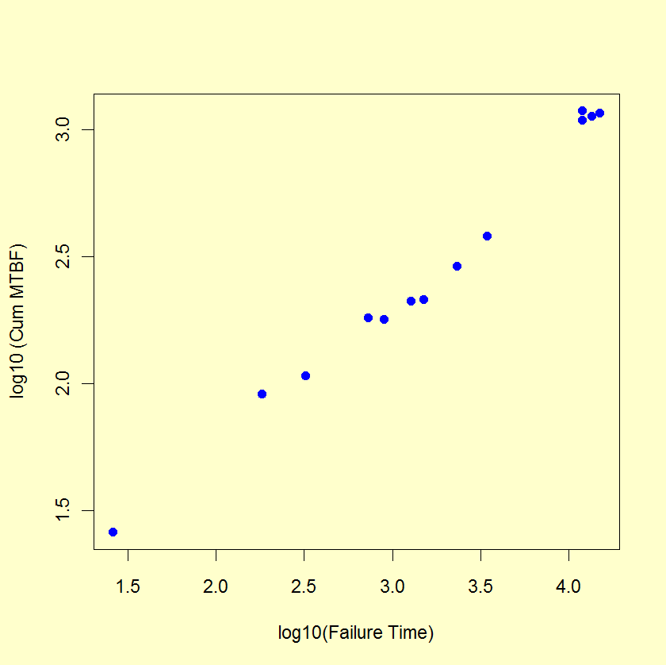

|
8.
Assessing Product Reliability
8.1. Introduction 8.1.9. How can you model reliability growth?
|
|||||||||||||||||||||||||||||||
| A plot on log-log paper of successive MTBF estimates versus system time of fail for reliability improvement test data is called a Duane Plot |
The standard estimate of the MTBF for a system with a constant
repair rate (an HPP system) is \(T/r\),
with \(T\) denoting the total time the system was observed and \(r\)
is the total number of failures that occurred.
If we calculate successive MTBF estimates (called Cum MTBF Estimates), every time a failure occurs for a system undergoing reliability improvement testing, we typically see a sequence of mostly increasing numbers. In 1964, J. T. Duane observed that when he plotted these cum MTBF estimates versus the times of failure on log-log paper, the points tended to line up following a straight line. This was true for many different sets of reliability improvement data and many other engineers have seen similar results over the last three decades. This type of plot is called a Duane Plot and the slope \(\beta\) of the best line through the points is called the reliability growth slope or Duane plot slope. |
||||||||||||||||||||||||||||||
| Points on a Duane plot line up approximately on a straight line if the Power Law model applies |
Plotting a Duane Plot is simple. If the \(i\)th
failure occurs at time \(t_i\),
then plot \(t_i\)
divided by \(i\)
(the "\(y\)"-
axis value) versus the time \(t_i\)
(the "\(x\)"-
axis value) on log-log graph paper. Do this for all the test failures
and draw the best straight line you can following all these points.
Why does this "work"? Following the notation for repairable system models, we are plotting estimates of {\(t/M(t)\)} versus the time of failure \(t\). If \(M(t)\) follows the Power Law (also described in the last section), then we are plotting estimates of \(t/at^b\) versus the time of failure \(t\). This is the same as plotting \((1/\alpha)t^\beta\) versus \(t\), with \(\beta = 1-b\). For a log-log scale plot, this will be a straight line with slope \(\beta\) and intercept (when \(t\) = 1) of \(-\mbox{log}_{10} a\). In other words, a straight line on a Duane plot is equivalent to the NHPP Power Law Model with a reliability growth slope of \(\beta = 1-b\) and an "\(a\)" parameter equal to \(10^{-\mbox{intercept}}\). Note: A useful empirical rule of thumb based on Duane plots made from many reliability improvement tests across many industries is the following: |
||||||||||||||||||||||||||||||
| Duane plot reliability growth slopes should lie between 0.3 and 0.6 |
The reliability improvement slope for virtually all reliability improvement tests will be between 0.3 and 0.6. The lower end (0.3) describes a minimally effective test - perhaps the cross-functional team is inexperienced or the system has many failure mechanisms that are not well understood. The higher end (0.6) approaches the empirical state of the art for reliability improvement activities. |
||||||||||||||||||||||||||||||
| Examples of Duane Plots |
Duane Plot Example 1:
A reliability growth test lasted 1500 hours (approximately 10 weeks)
and recorded 8 failures at the following system hours: 33, 76, 145, 347,
555, 811, 1212, 1499. After calculating successive cum MTBF estimates,
a Duane plot shows these estimates versus system age on log vs log paper.
The "best" straight line through the data points corresponds to a
NHPP Power Law model with reliability growth slope \(\beta\)
equal to the slope of the line. This line is an estimate of the theoretical
model line (assuming the Power Law holds during the course of the test)
and the achieved MTBF at the end of the test is given by
$$ \frac{T}{r(1-\beta)} \, , $$
with \(T\) denoting the total test time and \(r\)
the number of failures. Results for this particular reliability growth test follow.
 The Duane plot indicates a reasonable fit to a Power Law NHPP model. The reliability improvement slope (slope of line on Duane plot) is \(\beta\) = 0.437 (using the formula given in the section on reliability data analysis for the Power Law model) and the estimated MTBF achieved by the end of the 1500 hour test is 1500/(8 × [1-0.437]) or 333 hours. Duane Plot Example 2: A Duane plot for the simulated Power Law data used in the Example in the preceding section is shown below.  Duane plots can be produced using both Dataplot code and R code. |
||||||||||||||||||||||||||||||